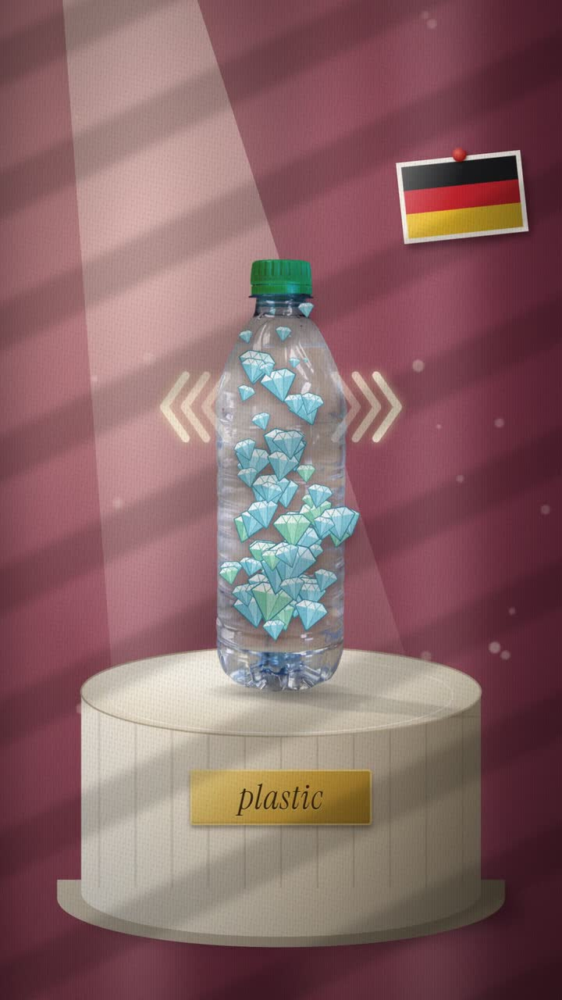

DIAMOND 26 s · vertical
One science story from the news: a laser turns bottle plastic into tiny diamonds.
Posted to YouTube Shorts, Instagram and Facebook
Taking film projects worldwide
Your footage and your voice-over, with the titles, maps, graphics and sound made for you and timed to every line. One film for your website, or a short one every month for social media.

The Merlo film
Company film · made at Merlo · live on their homepage
Made while working with Merlo as their Content Creative Assistant (contract, since September 2026). My first film for them — they have since booked four more.
Films
Short films that explain one thing to people scrolling past — the kind a company or a charity posts every month to teach its audience. My own, self-initiated.

One science story from the news: a laser turns bottle plastic into tiny diamonds.
Posted to YouTube Shorts, Instagram and Facebook

Teaches by making you try: count the sevens in 96 digits, fail, then watch colour make it instant.
An explainer that shows instead of tells

A pitch film for a team app that flags legal duties on bank hardship calls: the problem with its sources, then the app working.
Hackathon entry — the app made the final eight
Prices
Set for your market, shown in AUD.
Drag the playhead to see which film fits the length you need.
Social explainer
Homepage film
Pitch or programme film
Merlo — company profile 1:36 · the first thing a client sees on merlo.id
To teach on social media
from A$600
Up to 60 seconds, vertical, made to explain one thing on Instagram, LinkedIn or YouTube Shorts. Built titles and graphics, sound, two rounds of changes.
Start here For your website
from A$1,400
Up to 2 minutes on who you are and what you do — the first thing a visitor sees. Built maps and graphics, captions, a 30-second vertical cut for social, two rounds of changes.
For investors, funders, launches
from A$2,800
Up to 4 minutes: the problem, the evidence, the work. Custom built scenes, vertical and square cuts, subtitles in a second language, three rounds of changes.
Questions
Usually, yes. Merlo’s film was cut almost entirely from footage their own team shot. Before you film, I send a short list of the shots I need and how to hold the phone for them.
Two rounds on the social and homepage films, three on the pitch film. Send them as one list with the time of each change — that is how Merlo’s team worked, and it is the fastest way. An extra round is 15% of the film’s price.
Usually two to three weeks from the day I have your footage and voice-over, depending on how quickly changes come back. Under five working days is possible for 30% more.
You do. You get the finished files to use anywhere — your website, social media, presentations, events. Any music or stock footage comes with its own licence, and I check it covers how you will use it.
No generated video. Every shot is your footage or a graphic built for your film. If you have no voice-over, I can use a licensed AI narrator — I will say so up front, and you hear it before anything is built.
Briefs and changes in English or Indonesian. Subtitles in your language — tell me which one in the brief.
Start a film
Tell me what the film is for. I’ll come back with a fixed price and a date.
Prefer email? Write to aufanstudios@gmail.com
Replies come from Melbourne, Australia, on working days.
About
I make company films from Melbourne for organisations anywhere. I’m from Surabaya and study Data Science at the University of Melbourne — so I check every frame and measure the sound before you see a cut.
Tell me who it is for and roughly when you need it. I’ll come back with a price and a date.